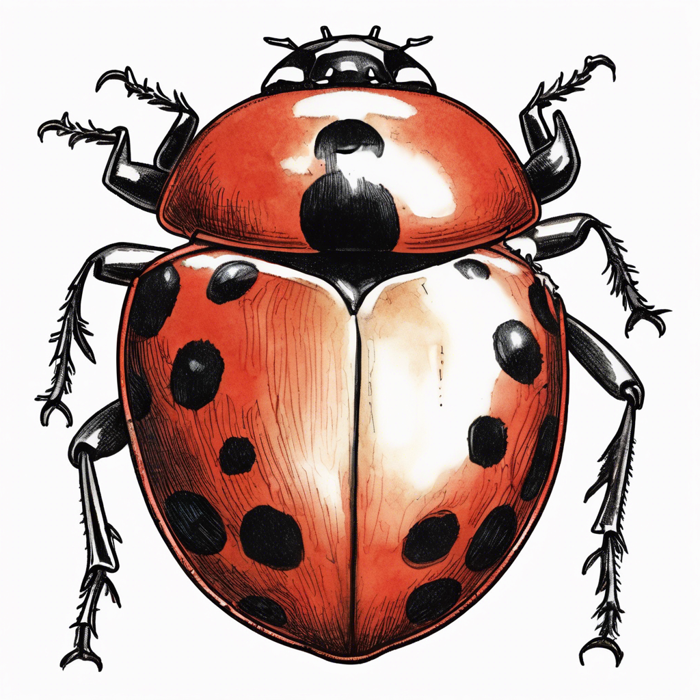

장수풍뎅이

장수풍뎅이 소개
장수풍뎅이는 우리나라에서 가장 큰 딱정벌레예요. 수컷은 머리에 긴 뿔이 있어서 '장수'라는 이름이 붙었답니다.
몸길이는 3-6cm 정도로, 수컷이 암컷보다 더 큰 편이에요.
장수풍뎅이의 생활
- 여름철 밤에 주로 활동해요
- 참나무의 수액을 먹어요
- 애벌레는 썩은 나무에서 자라요
- 수컷은 뿔로 서로 싸워요
재미있는 사실!
장수풍뎅이는 힘이 매우 세서 자기 몸무게의 100배가 넘는 무게도 들 수 있어요!
무당벌레

무당벌레 소개
무당벌레는 빨간색 또는 주황색 겉날개에 검은 점이 있는 예쁜 딱정벌레예요.
몸길이는 0.5-0.8cm 정도로 작지만 농부들에게 매우 도움이 되는 곤충이에요.
무당벌레의 생활
- 진딧물을 잡아먹어요
- 봄부터 가을까지 활동해요
- 정원이나 농장에서 볼 수 있어요
- 알에서 성충이 될 때까지 한 달 정도 걸려요
재미있는 사실!
무당벌레는 하루에 진딧물을 100마리나 잡아먹을 수 있어요! 농작물을 해치는 해충을 잡아먹어서 농부들의 친구랍니다.
하늘소

하늘소 소개
하늘소는 긴 더듬이가 특징인 딱정벌레예요. 더듬이가 몸길이보다 더 긴 경우도 있답니다.
몸길이는 2-3cm 정도이고, 날개에 아름다운 무늬가 있어요.
하늘소의 생활
- 나무를 갉아먹고 살아요
- 긴 더듬이로 주변을 탐색해요
- 애벌레는 나무 속에서 자라요
- 성충이 되면 꽃가루를 먹어요
재미있는 사실!
하늘소의 애벌레는 나무 속에서 2-3년 동안 자란답니다. 긴 더듬이는 짝을 찾을 때 중요한 역할을 해요!